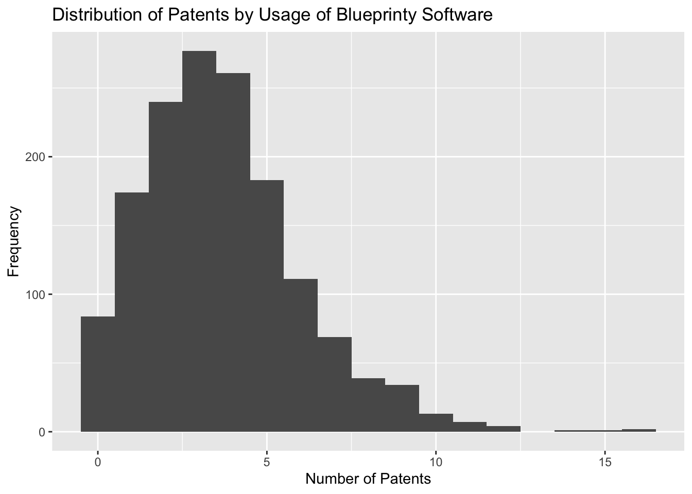
Poisson Regression Examples
Blueprinty Case Study
Introduction
Blueprinty is a small firm that makes software for developing blueprints specifically for submitting patent applications to the US patent office. Their marketing team would like to make the claim that patent applicants using Blueprinty’s software are more successful in getting their patent applications approved. Ideal data to study such an effect might include the success rate of patent applications before using Blueprinty’s software and after using it. unfortunately, such data is not available.
However, Blueprinty has collected data on 1,500 mature (non-startup) engineering firms. The data include each firm’s number of patents awarded over the last 5 years, regional location, age since incorporation, and whether or not the firm uses Blueprinty’s software. The marketing team would like to use this data to make the claim that firms using Blueprinty’s software are more successful in getting their patent applications approved.
Data
Based on the previous histogram, we can observe that the patents are skewed to the left which does not show a normal distribution. Based on the analysis of the histograms and mean number of patents awarded to firms, we observe that firms using Blueprinty’s software, on average, have a higher number of patents (4 patents) compared to those not using the software (3.6 patents). The histograms likely show that the distribution for firms using Blueprinty is shifted slightly to the right, indicating a higher frequency of firms with a greater number of patents. This analysis, bolstered by the statistically significant results of the t-test, strongly suggests a positive association between the use of Blueprinty’s software and the number of patents awarded. The evidence supports the claim that using Blueprinty’s software may enhance a firm’s success in securing patents.
| Uses Blueprinty | Mean Number of Patents |
|---|---|
| 0 | 3.623177 |
| 1 | 4.091371 |
Blueprinty customers are not selected at random. It may be important to account for systematic differences in the age and regional location of customers vs non-customers. After examining the data on age and regional distribution related to the status of Blueprinty software users, distinct patterns emerge that shed light on the user demographics and geographical preferences. Firms that use Blueprinty’s software have an average age of 24.15 years, which is notably younger than the 26.69 years for those that do not use the software. This indicates a trend where younger firms are more likely to embrace Blueprinty, potentially due to their greater openness to adopting innovative technologies or their different needs in managing patent applications effectively.
The regional analysis reveals a consistent trend across various U.S. regions: non-users of Blueprinty’s software significantly outnumber users. For example, in the Midwest, there are 207 non-users to just 17 users; in the Northeast, 488 non-users to 113 users; and this pattern holds in the Northwest, South, and Southwest as well. These figures suggest that while Blueprinty has a presence across these regions, its market penetration varies and remains relatively low compared to the potential number of firms that could benefit from its services.
The combination of these age and regional data points to a clear profile of Blueprinty’s current market which is younger firms across various regions, though still a minority among potential users. This demographic and regional information could be crucial for Blueprinty in tailoring its marketing strategies and product offerings. Specifically, it suggests a strategic opportunity to focus on younger firms and increase efforts in regions with lower adoption rates, possibly by addressing regional specific needs or barriers to adoption. Overall, the data provides a roadmap for potential growth and deeper market penetration for Blueprinty’s innovative software solutions.
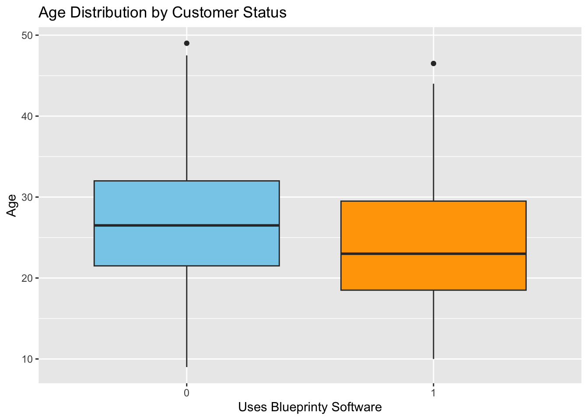
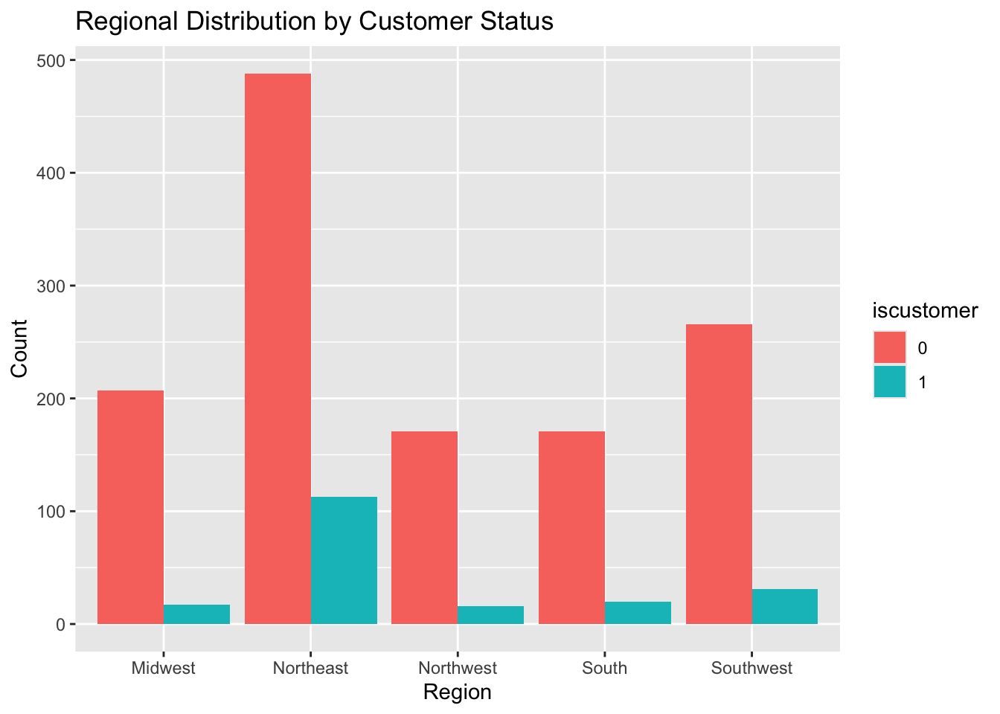
Estimation of Simple Poisson Model
Since our outcome variable of interest can only be small integer values per a set unit of time, we can use a Poisson density to model the number of patents awarded to each engineering firm over the last 5 years. We start by estimating a simple Poisson model via Maximum Likelihood.
\(Y \sim \text{Poisson}(\lambda)\). Note that \(f(Y|\lambda) = e^{-\lambda}\lambda^Y/Y!\).
The log-likelihood function for a set of independent observations \(y_1, y_2, \ldots, y_n\) from a Poisson distribution with parameter \(\lambda\) is given by:
\[ \ell(\lambda | y_1, y_2, \ldots, y_n) = \log L(\lambda | y_1, y_2, \ldots, y_n) = -n\lambda + \left(\sum_{i=1}^n y_i\right) \log \lambda - \sum_{i=1}^n \log(y_i!) \]
#Code the likelihood (or log-likelihood) function for the Poisson model. This is a function of lambda and Y. For example
poisson_loglikelihood <- function(lambda, Y) {
if(lambda <= 0) {
return(-Inf) # log-likelihood is -infinity if lambda is not positive
}
# Calculate the log-likelihood for Poisson distribution
log_likelihood <- -length(Y) * lambda + sum(Y * log(lambda)) - sum(lfactorial(Y))
return(log_likelihood)
}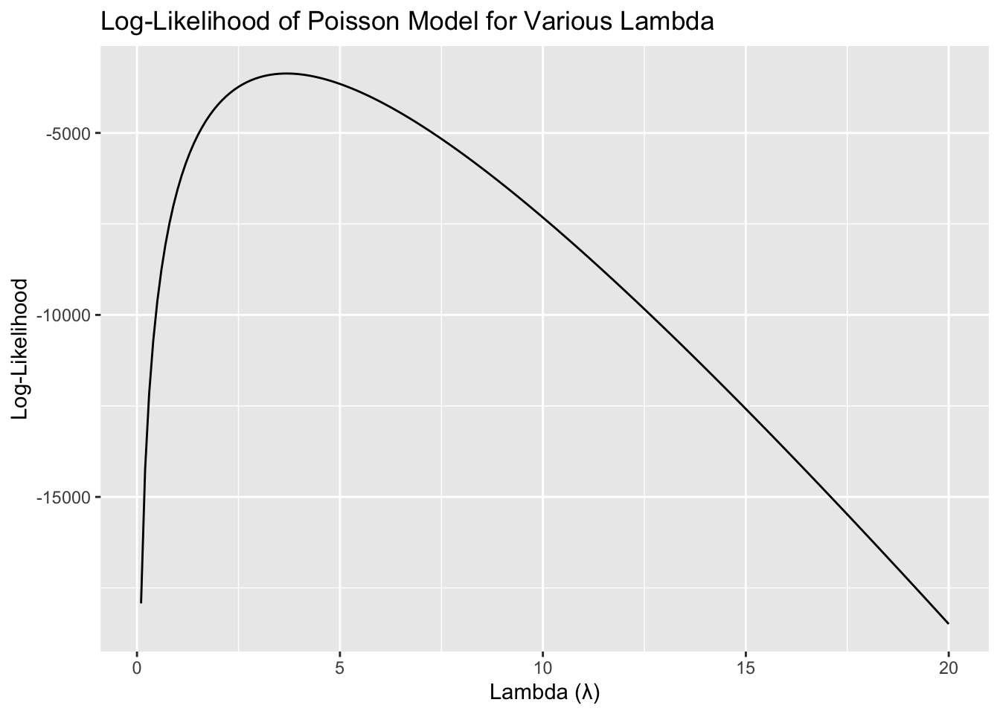
Given the log-likelihood function for a set of observations from a Poisson distribution: \[ \ell(\lambda) = -n\lambda + \left(\sum_{i=1}^n y_i\right) \log \lambda - \sum_{i=1}^n \log(y_i!) \]
The first derivative with respect to () is: \[ \frac{\partial \ell}{\partial \lambda} = -n + \frac{\sum_{i=1}^n y_i}{\lambda} \]
Setting this derivative equal to zero for maximization: \[ -n + \frac{\sum_{i=1}^n y_i}{\lambda} = 0 \]
Solving for (): \[ \lambda = \frac{\sum_{i=1}^n y_i}{n} \]
Thus, the MLE of () is the sample mean, (), which matches the expectation of the Poisson parameter: \[ \lambda_{\text{MLE}} = \overline{y} \]
# Calculate the MLE for lambda, which is the mean of Y
lambda_mle <- mean(Y)
# Output the result
print(paste("The MLE of lambda is:", lambda_mle))[1] "The MLE of lambda is: 3.68466666666667"[1] "The MLE of lambda is: 3.68466666668552"[1] "Optimization successful!"Estimation of Poisson Regression Model
Next, we extend our simple Poisson model to a Poisson Regression Model such that \(Y_i = \text{Poisson}(\lambda_i)\) where \(\lambda_i = \exp(X_i'\beta)\). The interpretation is that the success rate of patent awards is not constant across all firms (\(\lambda\)) but rather is a function of firm characteristics \(X_i\). Specifically, we will use the covariates age, age squared, region, and whether the firm is a customer of Blueprinty.
Update your likelihood or log-likelihood function with an additional argument to take in a covariate matrix X. Also change the parameter of the model from lambda to the beta vector. In this model, lambda must be a positive number, so we choose the inverse link function g() to be exp() so that* \(\lambda_i = e^{X_i'\beta}\). For example:*
poisson_regression_likelihood <- function(beta, Y, X) {
lambda <- exp(X %*% beta)
log_likelihood <- sum(Y * log(lambda) - lambda - lfactorial(Y))
# Return the negative of log-likelihood because most R optimization functions minimize
return(-log_likelihood)
}| Estimate | Standard Error | |
|---|---|---|
| (Intercept) | -0.2008772 | 0.1133793 |
| age | 0.1186880 | 0.0063973 |
| I(age^2) | -0.0022495 | 0.0000772 |
| regionNortheast | 0.0206660 | 0.0419832 |
| regionNorthwest | -0.0115896 | 0.0531043 |
| regionSouth | -0.0814664 | 0.0540337 |
| regionSouthwest | 0.0493809 | 0.0467772 |
| iscustomer | 0.0542006 | 0.0407959 |
| Estimate | Std. Error | z value | Pr(>|z|) | |
|---|---|---|---|---|
| (Intercept) | -0.4513 | 0.1836 | -2.4576 | 0.0140 |
| age | 0.1445 | 0.0139 | 10.4138 | 0.0000 |
| I(age^2) | -0.0029 | 0.0003 | -11.1308 | 0.0000 |
| regionNortheast | 0.0986 | 0.0420 | 2.3471 | 0.0189 |
| regionNorthwest | -0.0201 | 0.0538 | -0.3736 | 0.7087 |
| regionSouth | 0.0572 | 0.0527 | 1.0854 | 0.2778 |
| regionSouthwest | 0.0513 | 0.0472 | 1.0876 | 0.2768 |
| iscustomer | 0.1181 | 0.0389 | 3.0348 | 0.0024 |
The results from the Poisson regression models provide valuable insights into the factors influencing patent success among engineering firms. Notably, the use of Blueprinty’s software is significantly associated with increased patent counts. Specifically, the GLM analysis reveals that being a customer of Blueprinty’s software increases the log count of patents significantly, with a coefficient of 0.1181 (p = 0.0024), indicating a positive and statistically significant impact on patent awards when controlling for other factors. This finding supports the marketing claim that Blueprinty’s software enhances a firm’s ability to secure patents.
Additionally, the age of a firm and its squared term have significant effects on patent success, suggesting a quadratic relationship where patent activity increases with firm age up to a point before it begins to decline. This lifecycle effect is crucial for understanding the dynamics of innovation as firms mature. Regional differences also play a role, with firms in the Northeast experiencing higher patent counts compared to the baseline region, suggesting regional disparities in patent activities.
Overall, these results underscore the effectiveness of Blueprinty’s software in boosting patent success, while also highlighting the importance of firm age and regional context in patent award dynamics. This analysis not only reinforces the value proposition of Blueprinty’s software but also provides strategic insights for targeting specific firm demographics and regions to maximize patent production.
AirBnB Case Study
Introduction
AirBnB is a popular platform for booking short-term rentals. In March 2017, students Annika Awad, Evan Lebo, and Anna Linden scraped of 40,000 Airbnb listings from New York City. The data include the following variables:
Descriptive
# Visualize distributions of numerical variables
ggplot(airbnb_data, aes(x = price)) + geom_histogram(bins = 30) + ggtitle("Distribution of Prices")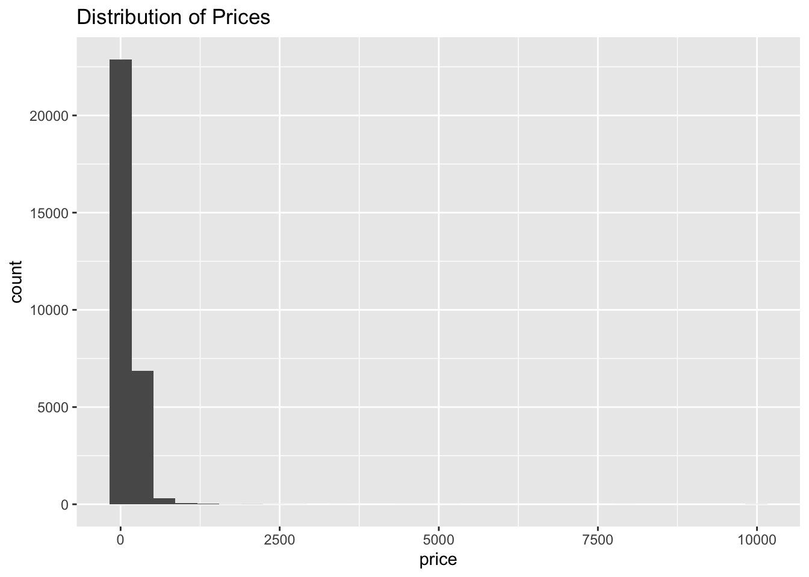
# Histogram of the Number of Reviews
ggplot(airbnb_data, aes(x = number_of_reviews)) +
geom_histogram(bins = 30, fill = "skyblue", color = "black") +
labs(title = "Distribution of Number of Reviews", x = "Number of Reviews", y = "Count")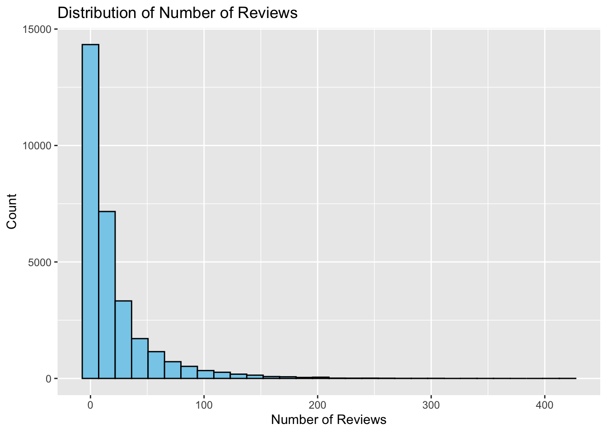
# Histogram of Bedrooms
ggplot(airbnb_data, aes(x = bedrooms)) +
geom_histogram(bins = 10, fill = "coral", color = "black") +
labs(title = "Distribution of Bedrooms", x = "Number of Bedrooms", y = "Count")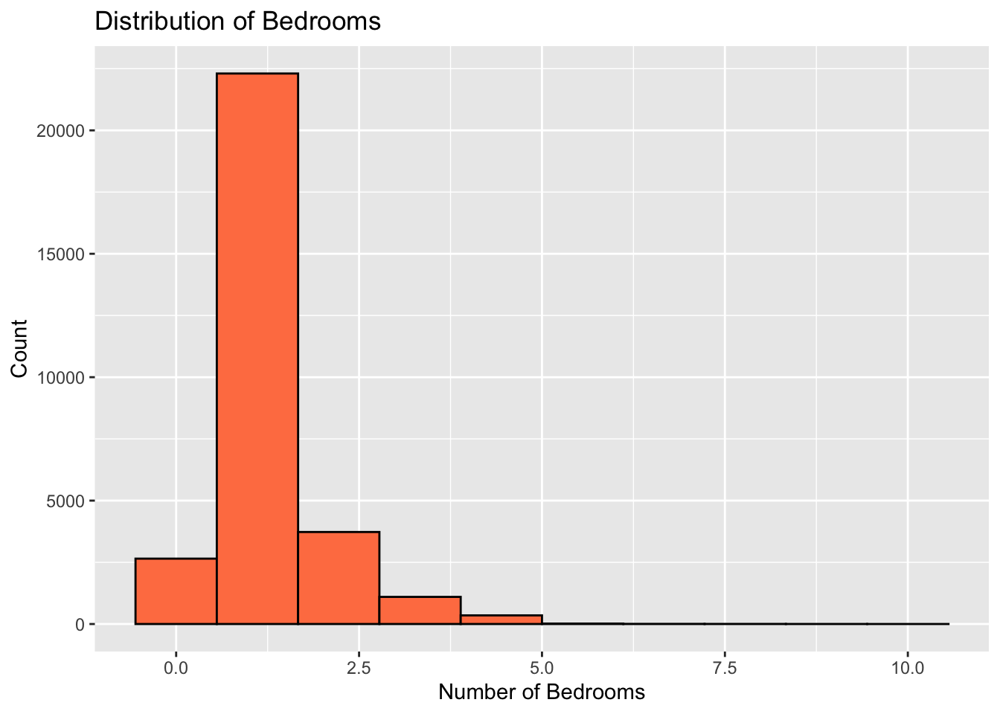
# Histogram of Bathrooms
ggplot(airbnb_data, aes(x = bathrooms)) +
geom_histogram(bins = 10, fill = "lightgreen", color = "black") +
labs(title = "Distribution of Bathrooms", x = "Number of Bathrooms", y = "Count")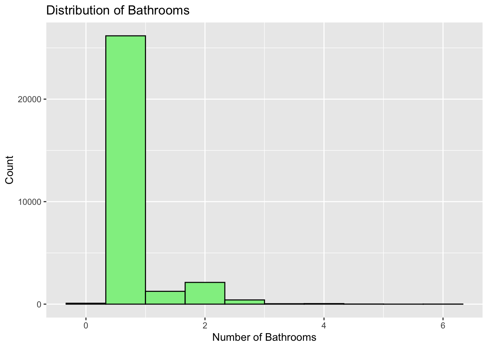
ggplot(airbnb_data, aes(x = price, y = number_of_reviews)) +
geom_point(alpha = 0.5, color = "blue") +
labs(title = "Price vs. Number of Reviews", x = "Price ($)", y = "Number of Reviews")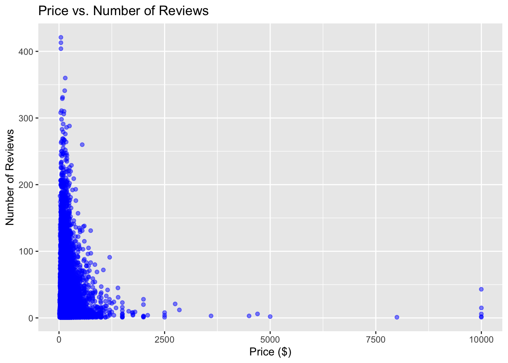
# Explore relationships between number of reviews and other features
ggplot(airbnb_data, aes(x = bedrooms, y = number_of_reviews)) + geom_point() + ggtitle("Bedrooms vs. Number of Reviews")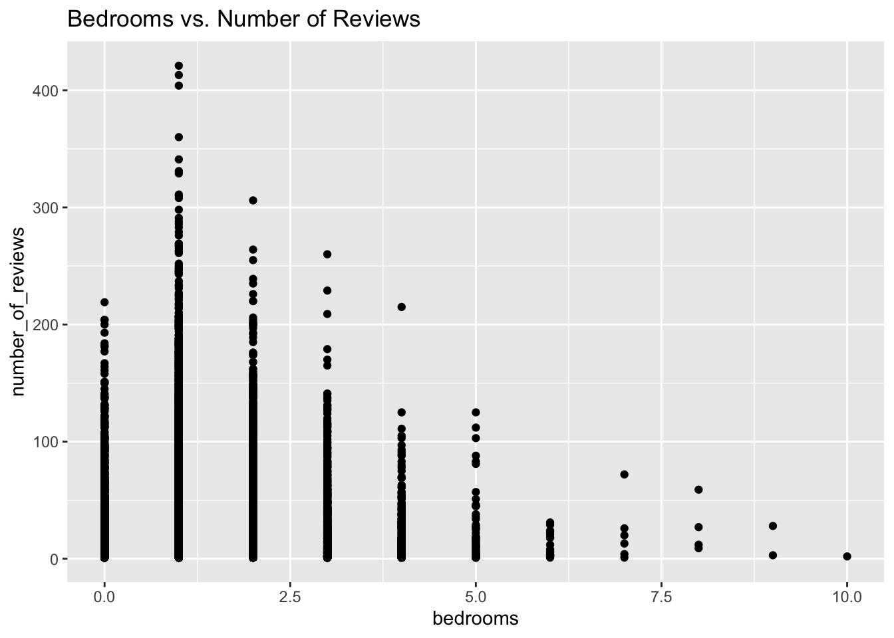
ggplot(airbnb_data, aes(x = instant_bookable, fill = instant_bookable)) +
geom_bar() +
labs(title = "Effect of Instant Bookable Feature on Listing Counts", x = "Instant Bookable", y = "Count of Listings")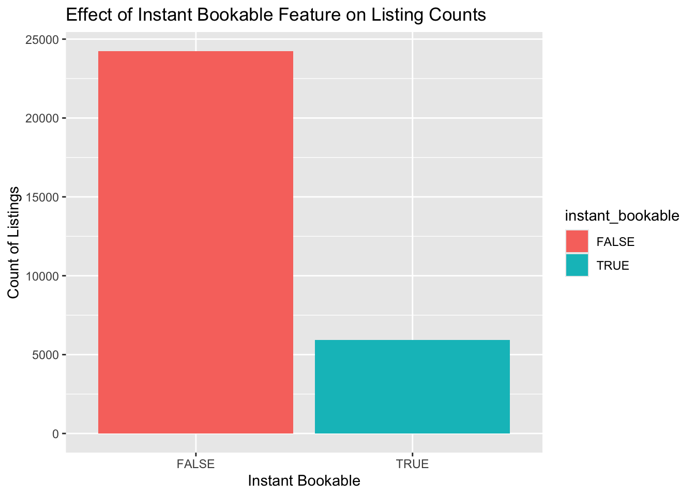
Analysis
# Fit the model
poisson_model <- glm(number_of_reviews ~ bedrooms + bathrooms + price + review_scores_cleanliness + review_scores_location + review_scores_value + instant_bookable, family = poisson(link = "log"), data = airbnb_data)
# Check summary
summary(poisson_model)
Call:
glm(formula = number_of_reviews ~ bedrooms + bathrooms + price +
review_scores_cleanliness + review_scores_location + review_scores_value +
instant_bookable, family = poisson(link = "log"), data = airbnb_data)
Coefficients:
Estimate Std. Error z value Pr(>|z|)
(Intercept) 3.543e+00 1.579e-02 224.421 <2e-16 ***
bedrooms 7.818e-02 1.963e-03 39.823 <2e-16 ***
bathrooms -1.286e-01 3.723e-03 -34.532 <2e-16 ***
price 1.134e-05 7.409e-06 1.531 0.126
review_scores_cleanliness 1.135e-01 1.490e-03 76.217 <2e-16 ***
review_scores_location -7.547e-02 1.600e-03 -47.159 <2e-16 ***
review_scores_value -9.159e-02 1.792e-03 -51.114 <2e-16 ***
instant_bookableTRUE 3.319e-01 2.880e-03 115.214 <2e-16 ***
---
Signif. codes: 0 '***' 0.001 '**' 0.01 '*' 0.05 '.' 0.1 ' ' 1
(Dispersion parameter for poisson family taken to be 1)
Null deviance: 961626 on 30159 degrees of freedom
Residual deviance: 937449 on 30152 degrees of freedom
AIC: 1058932
Number of Fisher Scoring iterations: 6TThe fitted Poisson regression model offers significant insights into the dynamics affecting the number of reviews on Airbnb listings, with the intercept showing a substantial baseline log count of reviews of 3.543 when all predictors are held constant. This high intercept suggests that even in the absence of any enhancing factors, listings inherently attract a baseline level of reviews.
Delving into the effects of specific variables, it is clear that larger properties, as indicated by the number of bedrooms, tend to attract more reviews, with each additional bedroom leading to a roughly 7.82% increase in the number of reviews. This trend underscores the preference or need among Airbnb users for more spacious accommodations, which likely accommodate larger groups who may be more engaged in leaving feedback. In contrast, an increase in the number of bathrooms tends to reduce the number of reviews by about 12.86%. This might suggest that properties with disproportionately more bathrooms than bedrooms are perceived as offering less value, particularly to larger groups who are key contributors to reviews. The impact of pricing on reviews is minimal and statistically insignificant, indicating that the nightly rate, within the range observed in the dataset, does little to influence the frequency of reviews. This might point to price sensitivity being less critical than other factors in determining guest satisfaction or engagement.
Review scores significantly affect the number of reviews, with cleanliness being particularly critical. Each additional point in cleanliness scores correlates with an 11.35% increase in reviews, highlighting the paramount importance guests place on cleanliness. However, higher location and value scores are associated with fewer reviews. This could reflect a scenario where high expectations set by top ratings in these categories are not always met, or perhaps satisfaction in these areas leads to less perceived need among guests to provide feedback.
The feature of instant bookability markedly enhances the number of reviews, with listings offering this option seeing a 33.19% increase in reviews compared to those without it. The convenience of instant booking appears to be a significant draw for guests, leading to higher engagement in terms of reviews.While the model’s Akaike Information Criterion (AIC) and residual deviance indicate a good fit, there is room for improvement. This could potentially be achieved by incorporating interaction terms or exploring other unobserved factors that might refine the understanding of what drives reviews on Airbnb.
Overall, the model elucidates several key insights: practical features like more bedrooms and instant bookability tend to increase reviews, while more subjective assessments such as location and value can detract from them if guest expectations are not managed appropriately. The critical role of cleanliness in driving review counts cannot be overstated. This comprehensive analysis can assist hosts in focusing on the attributes most valued by guests, potentially guiding enhancements that lead to more bookings and feedback, thereby boosting the visibility and success of their listings
nb_model <- glm.nb(number_of_reviews ~ bedrooms + bathrooms + price + review_scores_cleanliness + review_scores_location + review_scores_value + instant_bookable, data = airbnb_data)
# Check summary
summary(nb_model)
Call:
glm.nb(formula = number_of_reviews ~ bedrooms + bathrooms + price +
review_scores_cleanliness + review_scores_location + review_scores_value +
instant_bookable, data = airbnb_data, init.theta = 0.7009228771,
link = log)
Coefficients:
Estimate Std. Error z value Pr(>|z|)
(Intercept) 4.185e+00 9.319e-02 44.906 < 2e-16 ***
bedrooms 7.398e-02 1.125e-02 6.577 4.80e-11 ***
bathrooms -1.139e-01 2.020e-02 -5.639 1.71e-08 ***
price 6.427e-06 3.983e-05 0.161 0.872
review_scores_cleanliness 1.982e-01 8.034e-03 24.671 < 2e-16 ***
review_scores_location -1.090e-01 9.391e-03 -11.606 < 2e-16 ***
review_scores_value -2.117e-01 1.047e-02 -20.220 < 2e-16 ***
instant_bookableTRUE 3.261e-01 1.762e-02 18.512 < 2e-16 ***
---
Signif. codes: 0 '***' 0.001 '**' 0.01 '*' 0.05 '.' 0.1 ' ' 1
(Dispersion parameter for Negative Binomial(0.7009) family taken to be 1)
Null deviance: 35554 on 30159 degrees of freedom
Residual deviance: 34579 on 30152 degrees of freedom
AIC: 242074
Number of Fisher Scoring iterations: 1
Theta: 0.70092
Std. Err.: 0.00521
2 x log-likelihood: -242056.42700 The analysis conducted using the Negative Binomial regression model reveals significant insights about the factors that influence the number of reviews on Airbnb listings. The model, robust in its statistical significance and precision, illuminates the impacts of various property characteristics on guest engagement. The intercept of the model is notably high and statistically significant, indicating a substantial baseline number of reviews independent of the property features. This high baseline suggests that listings on Airbnb tend to attract a certain level of reviews due to the platform’s inherent popularity and the active participation of its user base.
Among the variables analyzed, the number of bedrooms in a property shows a positive correlation with the number of reviews. Specifically, each additional bedroom is associated with a significant increase in the expected number of reviews, highlighting that larger properties, which typically accommodate more guests, are more likely to receive feedback, possibly due to the increased likelihood of group travels or family stays. An increase in the number of bathrooms tends to decrease the number of reviews. This negative association might suggest that properties with a higher number of bathrooms relative to their bedrooms do not provide proportional value or appeal, especially if these additional bathrooms lead to higher rental prices without corresponding benefits. The pricing variable shows a very small and statistically insignificant effect on the number of reviews, indicating that price fluctuations within the observed range do not significantly impact guest decisions to leave reviews. This suggests that guests’ decisions to review are driven more by their experiences than by cost considerations.
Review scores also play a critical role in influencing reviews. High cleanliness scores are particularly impactful, with each point increase leading to a substantial rise in the number of reviews. This underscores the importance of cleanliness in guest satisfaction and their propensity to leave feedback. In contrast, higher scores for location and value are associated with fewer reviews. This could be due to the high expectations set by such scores not being met or that guests satisfied with the location and value may feel less compelled to leave feedback. The feature of instant bookability significantly boosts the number of reviews, with listings offering this option seeing a marked increase in reviews compared to those that do not. The convenience and ease of booking facilitated by this feature likely encourage more bookings and consequently, more reviews.
Overall, the model demonstrates a good fit, as evidenced by the AIC and the closeness of the null and residual deviances, suggesting it captures the variation in review numbers well. The significant theta value, indicating the appropriateness of the Negative Binomial model over simpler models, points to the presence of overdispersion in the count data, which this model adequately addresses.
In conclusion, the findings reveal that while practical amenities like additional bedrooms and instant bookability enhance review counts, subjective assessments such as location and value can detract from them if not managed properly. Cleanliness emerges as a key driver of reviews, highlighting an area where hosts can focus their efforts to boost guest satisfaction and attract more reviews. This comprehensive analysis provides actionable insights for Airbnb hosts aiming to optimize their listings and improve guest experiences.